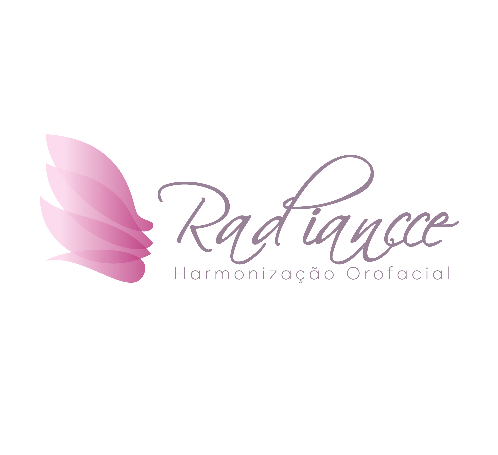
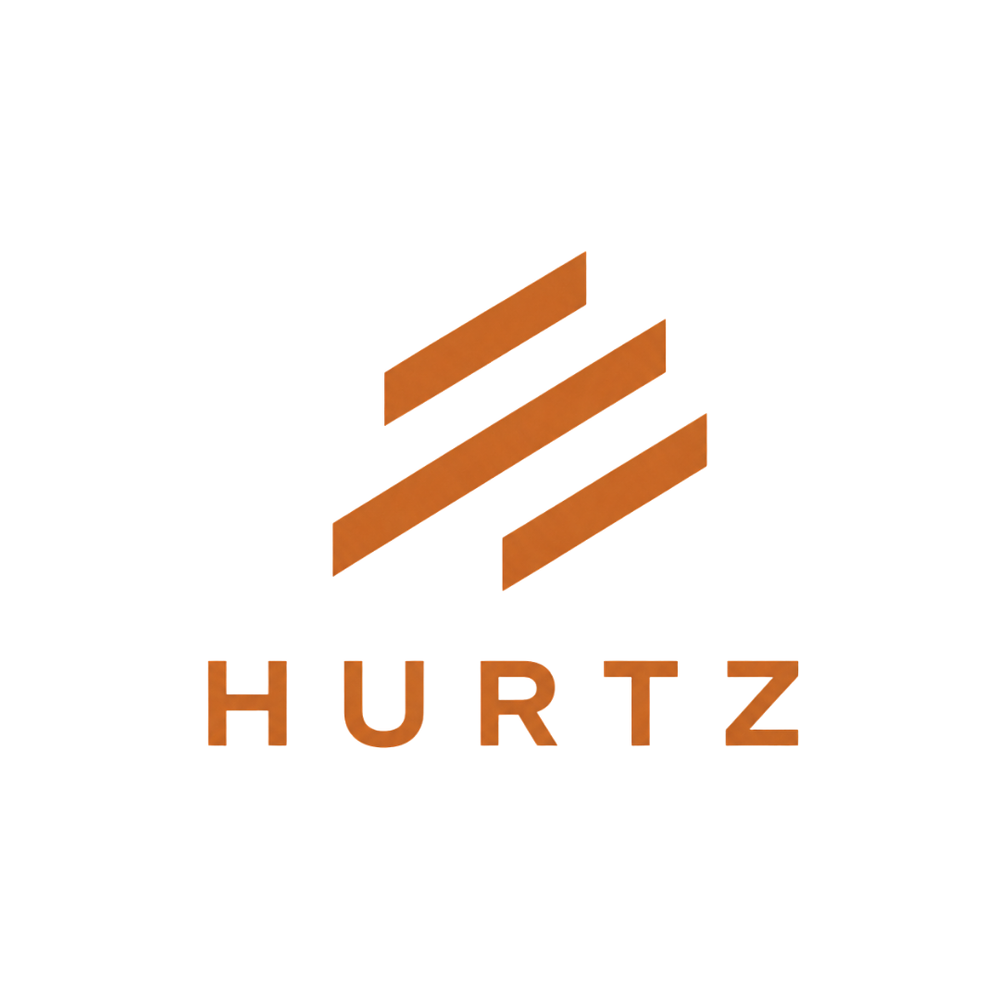

“Se você é daqui de Serra e se incomoda com o formato do seu nariz nas fotos, pare tudo e assista a este vídeo.”
“Aquela giba, aquela ponta caída ou aquela assimetria que só você percebe, mas que incomoda em toda selfie e em toda foto de perfil. E a ideia de fazer uma cirurgia assusta.”
“Aqui na Radiancce, fazemos a rinomodelação com preenchimento, sem cortes e sem cirurgia. O procedimento é realizado em uma única sessão, e os resultados iniciais podem ser percebidos logo após a aplicação, de acordo com cada caso.”
“Envie uma mensagem agora e agende a sua avaliação gratuita aqui na Radiancce.”
“Você, que é de Serra e evita fotos de perfil por causa da papada, este vídeo é para você.”
“Aquela gordurinha abaixo do queixo, que não sai nem com dieta nem com exercícios, pode deixar o rosto com uma aparência mais cansada ou envelhecida.”
“Na Radiancce, fazemos a lipo de papada com um procedimento minimamente invasivo. Conforme a resposta de cada organismo, os resultados podem começar a aparecer nas primeiras semanas.”
“Clique no botão abaixo e agende a sua avaliação gratuita na Radiancce.”